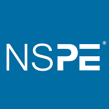
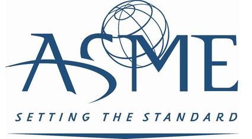
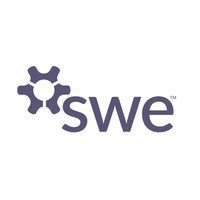
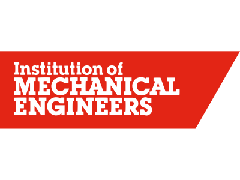

Professional Organizations
National Society of Professional Engineers
- A national organization that deals with ethical dilemmas in areas of engineering.
- Members are provided with networks of experts to help guide them through these dilemmas.

American Society of Mechanical Engineers
- This national organization provides members and communities with training in professional development, standards, research, while simultaneously giving members the opportunity to network at conferences

Society of Women Engineers
- Provides professional education to women
- Provides internal networking opportunities
- Advocates for members
- Increase diversity within the organization to include as many women as possible

Institution of Mechanical Engineers
- An international organization that develops the education of their members, promotes engineering to everyone, informs opinon on matters related to engineering and encourages innovation.
